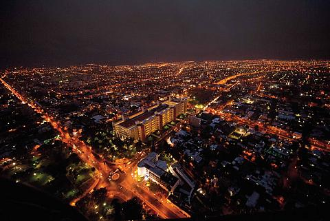

La Provincia de San Juan está situada en el centro-oeste de la República Argentina, en la Región de Cuyo. Su territorio está dividido en 19 departamentos y su ciudad capital, San Juan, es sede del gobierno provincial.
San Juan, en el texto de la constitución: Provincia de San Juan 3 es una de las 23 provincias de la República Argentina. A su vez, es uno de los 24 estados autogobernados o jurisdicciones de primer orden4 que conforman el país, y uno de los 24 distritos electorales legislativos nacionales.56 Su capital y ciudad más poblada es la homónima San Juan. Está ubicada en el noroeste de la región de Cuyo y más exactamente al oeste del país, limitando al noreste con La Rioja, al sureste con San Luis, al sur con Mendoza y al oeste con las regiones chilenas de Atacama, Coquimbo y Valparaíso.
El territorio de esta provincia abarca 89. 651 km², siendo la decimoquinta provincia más extensa, en donde prima un relieve montañoso intercalado por valles y travesías bajo un clima, predominante, templado seco, con una marcada escasez de cursos hídricos superficiales. En los valles se desarrollan los oasis, producto del embalsamiento y sistematización de los ríos generados por el deshielo cordillerano. Entre ellos se destaca el oasis del Tulum, en donde se emplaza el Gran San Juan, núcleo urbano que concentra más del 60% de la población total de la provincia.
